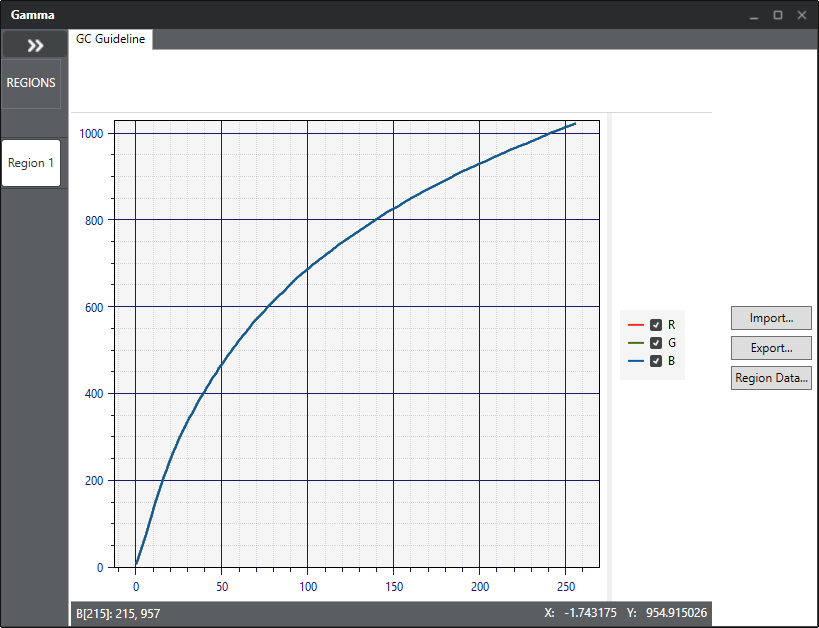

Prepare a gamma curve for each color correction region.
Chromatix provides a gamma curve.
Unless you require a custom curve, it is usually adequate to choose the one provided.
Use this procedure to view the Chromatix-supplied curve or to create custom curves.
Custom curves can be made by editing an existing curve or can be made from an imported
gamma table.
-
On the Pipeline tab, click to open the Color Correction
window
-
At the top of the Color Correction
(CC) window, click Edit
Gamma.
-
Click the Region to be tuned.
-
Use the R, G, B check boxes to the right of the graph to view the plot of each
channel.

-
To export the current gamma curve, do the following:
- Click Export.
- Save the curve data to the preferred location and name the data file.
The data is saved in three text files labeled with the specified name
followed by R, G, or B.
-
To import a different gamma curve, do the following:
- Click Import.
- Navigate to and select the R, G, B, and RGB text files for the curve.
Follow the prompts at the top of the navigation window to select each
file in the proper order.
-
To edit the current gamma curve, do the following:
- Click Region Data.
- Edit the gamma curve entries as needed.
-
Open an image with the new gamma table to see the results of the
modification.
-
Click to save the changes.
Whenever you make a change in the gamma
curve for a lighting condition, you must re-optimize the CC tuning parameters for the
same lighting condition.